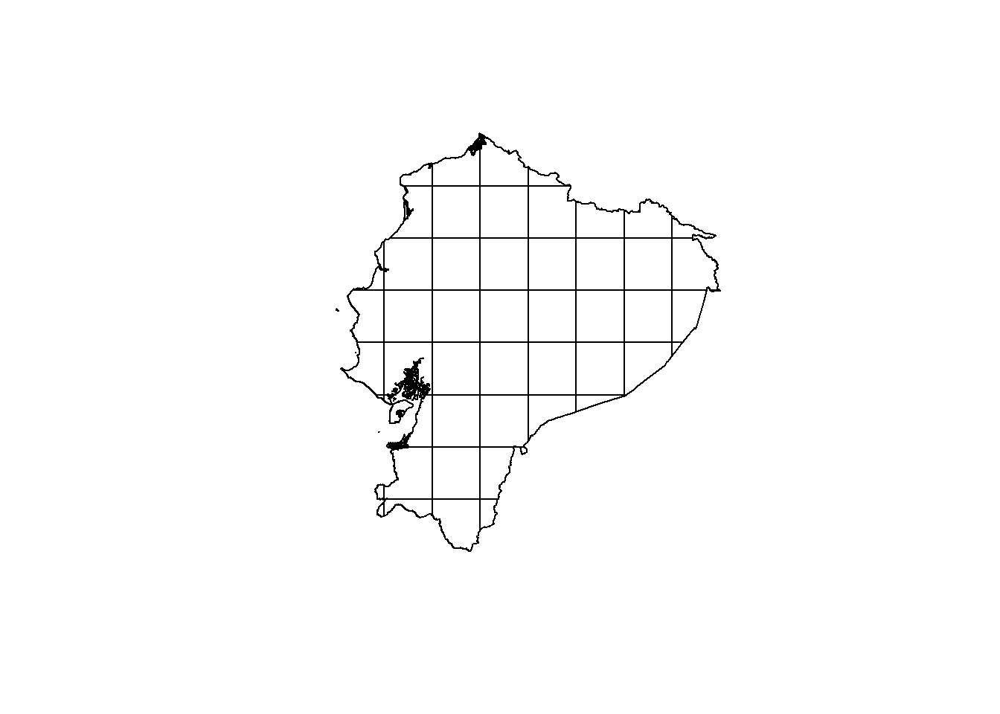
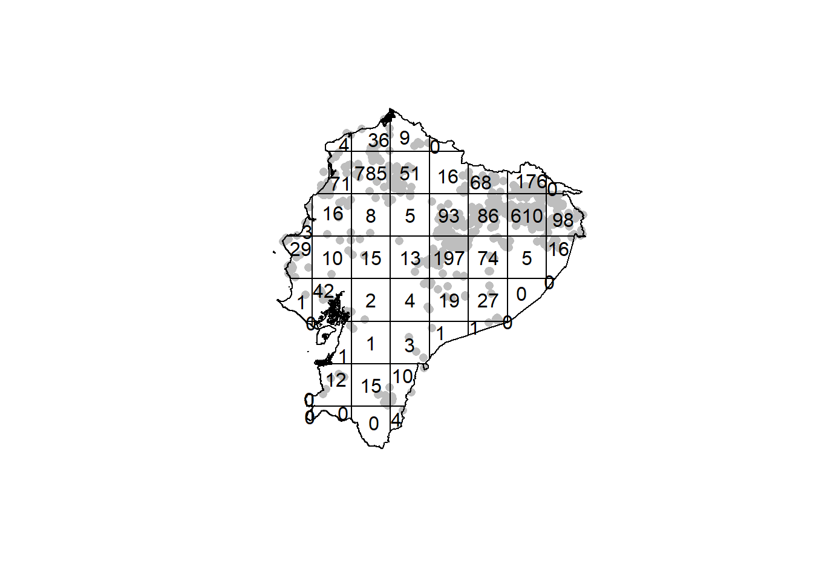
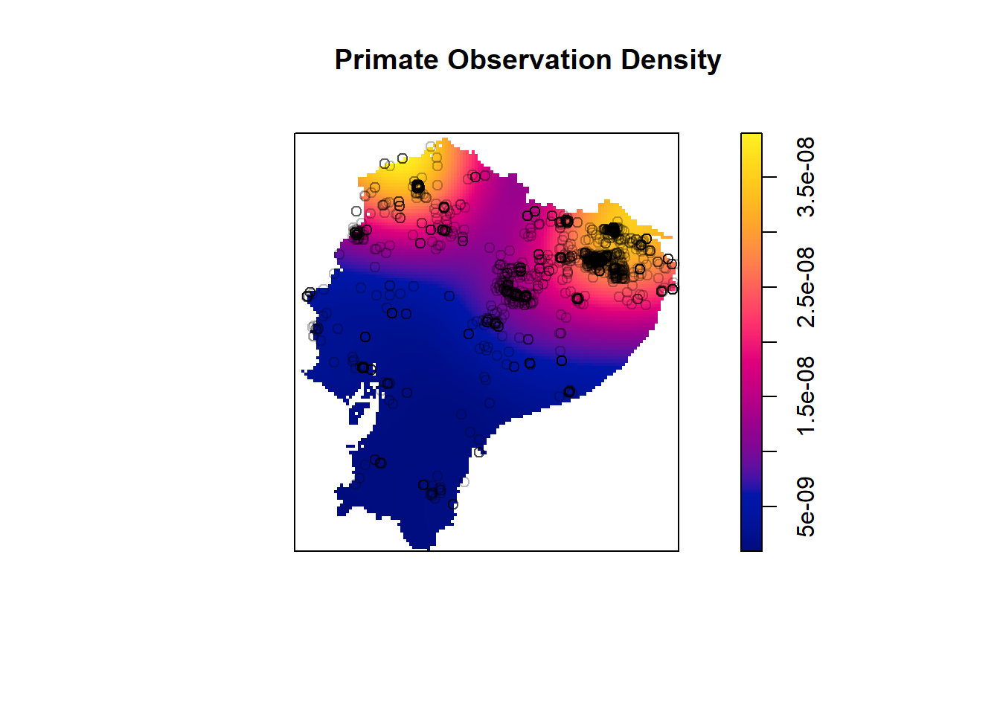

Part 4 Quadrat analysis
For quadrat analysis, we divide the up the study area into a regular grid and then count how many instances there are of a thing in that grid. In the case of Ecuador, we’ll divide it into a 8x8 grid.
plot(quadrats(ecWin,8,8),main="")
We can also create a primate dataset without marks. This is mostly just so they won’t plot.
p<-unmark(primatesPoints)Now we can use quadratcounts
quad <- quadratcount(p, nx= 8, ny=8)
#plot points
plot(p, pch=16, cols="grey", main="")
plot(quad, add=TRUE) 
Just looking at this pattern, we can see that some quadrats have more than 100 observations, while others have none at all. This suggests intuitively that the distribution of is patterned, but we can estimate whether this is meaningful using quadrat.test.
quadrat.test(p, 8, 8)## Warning: Some expected counts are small; chi^2 approximation may be inaccurate##
## Chi-squared test of CSR using quadrat counts
##
## data: p
## X2 = 11974, df = 49, p-value < 2.2e-16
## alternative hypothesis: two.sided
##
## Quadrats: 50 tiles (irregular windows)Note that the p-value is < 2.2e-16. This means that the
4.1 Kernel Density Estimation
We can visualize broad scale patterning in our data through a kernel density estimate (KDE). This is similar to the above approaches in that it calculates the number of of instances
ecDensity <- density(p)
plot(ecDensity,main="Primate Observation Density")
plot(p,add=T)
These exercises are meant to introduce you to spatstat and start looking at spatial analysis in R.
4.2 Try it yourself
spatstat comes with some pre-made datasets to test things out with. These are already saved as ppp objects when you call them. Try doing the following:
- Look at nearest neighbor with the
redwoodsandamacrinedatasets - Create a kernel density estimate from the
cellsdata - Do a quadrat analysis, including the quadrat test, using the
nztreesdata